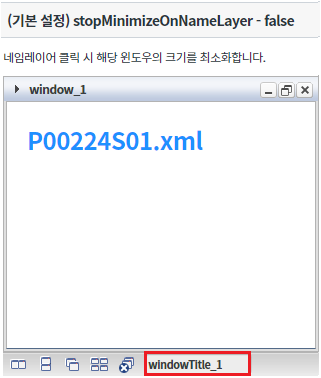
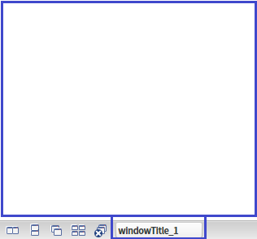
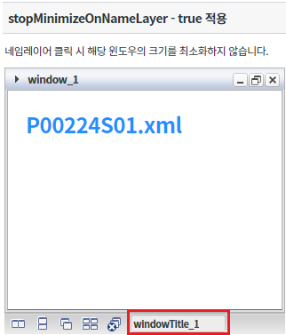
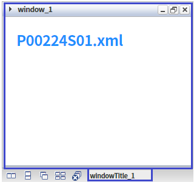
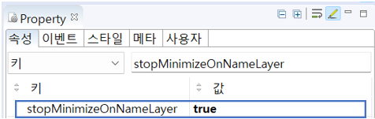
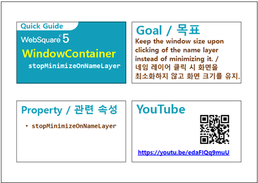

네임 레이어 클릭 시 해당 윈도우가 최소화되지 않게 하는 속성에 관한 예제입니다. 이 기능은 아래의 속성으로 사용할 수 있습니다. - stopMinimizeOnNameLayer : 네임레이어 클릭에 상관 없이 윈도우를 항상 열린 상태로 유지
속성 'stopMinimizeOnNameLayer' 미사용
속성 'stopMinimizeOnNameLayer' 사용
네임레이어 "windowTitle_1"을 클릭합니다.
[브라우저(Chrome) 실행 예시]

윈도우가 최소화된 것과 네임레이어'windowTitle_1'이 비활성화된 것을 확인합니다.
[브라우저(Chrome) 실행 예시]

네임레이어 "windowTitle_1"을 클릭합니다.
[브라우저(Chrome) 실행 예시]

윈도우가 최소화되지 않은 것과 네임레이어'windowTitle_1'이 활성화된 것을 확인합니다.
[브라우저(Chrome) 실행 예시]

WindowContainer의 속성을 정의합니다.
[필수] stopMinimizeOnNameLayer="true" //[default:false, true] 설정을 적용하면 속성 값으로 "true"를 입력하면 된다, 네임레이어 클릭에 상관 없이 윈도우를 항상 열린 상태로 유지할 수 있다.
그림 1.웹스퀘어5 SP5 스튜디오의 Property View(속성창) 예시

<!-- windowContainer 의 소스 본문 예시 --> <w2:windowContainer stopMinimizeOnNameLayer="true" id="wgc_exam_2"> <!-- 생략 --> </w2:windowContainer>
stopMinimizeOnNameLayer
[웹스퀘어5 SP5 개발 가이드] WindowContainer
링크 : https://docs1.inswave.com/sp5_user_guide#7214a34e26fc99d7
[웹스퀘어5 SP5 개발 가이드] WindowContainer 윈도우를 항상 열린 상태로 유지
링크 : https://docs1.inswave.com/sp5_user_guide#145b7af3b790b10d#
WindowContainer 윈도우를 항상 열린 상태로 유지
링크 : https://www.youtube.com/watch?v=edaFIQq9muU
